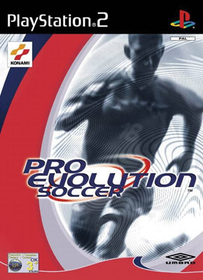

Evolution Soccer 2018 ー первая игра футбольной серии игр Pro Evolution Soccer. Игра была выпущена 23 ноября 2001 года в Европе
Анимация игроков (по сравнению с предыдущими версиями) была усовершенствована, на новом движке работают падения и дриблинг. Стадионы и толпы были переработаны для большего реализма. Некоторые компоненты, такие как стадион, тени и усталость игроков впервые появились в серии. Вратари стали гораздо умнее. В условиях съемки и передачи, о что изменилось. Игроки стали более разумно работать с мячом, чем прежде. Сам мяч стал реагировать более непредсказуемо при ударах игроков и рикошетах от защитников. Поддержка до восьми игроков сделала эту игру любимой среди спортивных фанатов.
В игру были включены 50 национальных сборных и 32 клуба. Игра почти не имеет официальной лицензии на команды, так что все составы, которые похожи на реальные, не имеют эмблем.

Разработчик:
Konami TYO
Издатель:
Konami
Часть серии:
Pro Evolution Soccer
Дата выпуска:
30 октября 2001
Жанр:
Спортивные игры